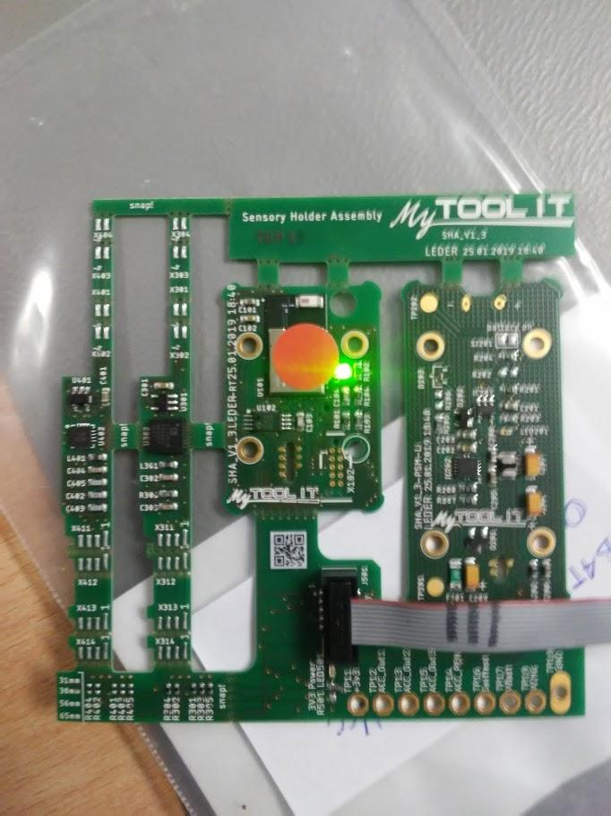
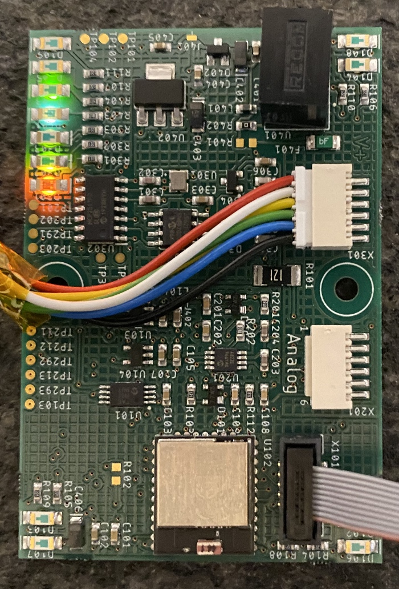

STH & STU Tests
1 Vorbereitung
Damit der Test für eine STH oder STU durchgeführt werden kann benötigt man diverse Hardware und Software-Komponenten. Der nächste Teil des Texts beschreibt als erstes das Hardware-Setup und dann die Installation der benötigten Software.
1.1 Hardware
Arbeitsplatz
PC aufbauen und Peripherie (Maus, Tastatur, Bildschirm) anschließen
ESD-Matte aufbauen und anschließen
Stromversorgung für STU einrichten
- Power-Injector (24V) (oder selten für 5V: Micro-USB)

24V Vs. 5V
PEAK-CAN-Adapter an USB-Port anschließen
Programming-Board an USB-Port anschließen
Je nachdem ob man eine SHA/STH oder STU testen will unterscheidet sich welche Einheit man am Debug-Adapter des Programming-Boards anstecken muss:

Programming Board
STH-Test: Debug-Adapter von Programming-Board (mittels Adapter Cable) mit SHA/STH verbinden
SHA
STU-Test: Debug-Adapter von Programming-Board (mittels Adapter Cable) mit STU verbinden
STU
1.2 Software
Windows 10 installieren
Python (
3.6+) installieren- Nicht vergessen „Add Python to Path“ zu selektieren
Simplicity Studio installieren (Simplicity Commander wird benötigt)
Sourcetree installieren
Git-Repositories in
Documents-Ordner klonenPEAK-System Gerätetreiber für Windows installieren
Skript zur Installation der benötigten Python-Pakete im
ICOc-Repo ausführen- Powershell im Ordner
ICOcöffnen- Shift + Ctrl + Rechts-Click im Explorer
- „Powershell hier öffnen“ auswählen
- Den folgenden Befehl ausführen:
- Powershell im Ordner
Im STH-Ordner einen neuen Unter-Ordner namens
buildserstellen und das aktuelle Binary (.hex) dort speichern.Im STU-Ordner einen neuen Unter-Ordner namens
buildserstellen und das aktuelle Binary (.hex) dort speichern.Nach diesen Schritten sollte die Ordner-Struktur in etwa so aussehen:
Documents ├── ICOc ├── STH │ └── builds │ └── manufacturingImageSthv2.1.10.hex └── STU └── builds └── manufacturingImageStuv2.1.10.hexSkript-Unterordner (üblicherweise
%USERPROFILE%\Documents\Projects\ICOc\Scripts) zum User-Pfad (oder System-Pfad) hinzuzufügen. Eine Beschreibung wie das funktioniert gibt es z.B. hier. Danach kann man auf die Programme imScripts-Ordner von einem beliebigen Ordner aus in der Powershell zugreifen.Execution Policies ändern damit Powershell-Skripte ausgeführt werden können:
Nachdem die Software-Komponenten nur erfolgreich installiert und eingerichtet wurden kann man mit
fortfahren.
2 STH Tests
2.1 Test-Vorgang
Schalter an Programming-Board in Position „AEM“ schieben (Stromversorgung über Programming-Board)
Im ICOc-Repo
config.yamlanpassen. Eventuell sind folgende Daten zu ändern:Seriennummer des Boards
- Seriennummer ermitteln: Steht im LCD des Programming-Boards ganz unten
STH→Programming Board→Serial Numberändern
Name des PCB (
STH→Name)- Neue Boards sollten üblicherweise den Namen „Tanja“ haben
Verwendeter Beschleunigungssensor (
STH→Acceleration Sensor→Sensor) (Optional): Welcher Sensor verwendet wird lässt sich üblicherweise an Hand eines Sticker an der Rückseite des PCB ermitteln. Ein Sticker mit der Aufschrift1weißt dabei auf den SensorADXL1001hin, während2auf den SensorADXL1002verweist.
Falls kein Sticker vorhanden ist, kann eine Lupe oder die Lupenfunktion eines Mobiltelefons recht hilfreich sein um die Identifikation auf dem Sensor zu lesen.
Production Date auf Datum des PCB (
STH→Production Date) (Optional)Operator-Name auf den eigenen Namen setzen (
Operator→Name) (Optional)
Test-STHin Powershell ausführen:Test-Ergebnis ansehen
- Testergebnis
OK: gehe zu Schritt 5 - Testergebnis
FAILEDoderERROR: Fehlersuche
- Testergebnis
Freigegeben für Einbau
Test für eingebaute SHA (STH) und vergossene STH wiederholen
- Schalter an Programming-Board in Position „USB“ schieben
Nachdem alle Test erfolgreich abgeschlossen wurden: Fertig für Versand
3 STU Tests
3.1 Test-Vorgang
Im ICOc-Repo
config.yamlanpassen. Eventuell sind folgende Daten zu ändern:- Seriennummer des Boards
- Seriennummer ermitteln: Steht im LCD des Programming-Boards ganz unten
STU→Programming Board→Serial Numberändern
- Production Date auf Datum des PCB (
STU→Production Date) (Optional) - Operator-Name auf den eigenen Namen setzen (
Operator→Name) (Optional)
- Seriennummer des Boards
Test-STUin Powershell ausführen:Test-Ergebnis ansehen
- Testergebnis
OK: gehe zu Schritt 4 - Testergebnis
FAILEDoderERROR: Fehlersuche
- Testergebnis
Nachdem alle Test erfolgreich abgeschlossen wurden: Fertig für Versand